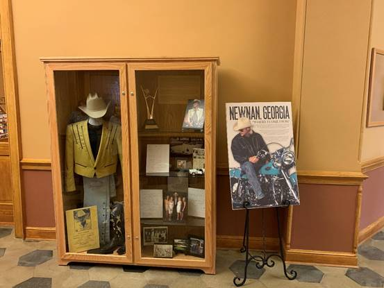
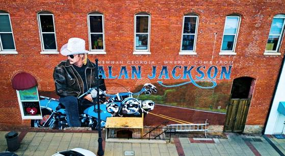

ALAN JACKSON CELEBRATES THREE DECADES OF MUSIC

Country Music Icon Signed His First Record Deal 30 Years Ago Today
2019 Tour, New Documentary and Hometown Salute Highlight Start of the Celebration

Photo Courtesy of Alan Jackson Archives
Flanked by then-Arista Nashville label chief Tim DuBois (L) and publisher-manager Barry Coburn (R), Alan Jackson signs his original record deal on June 26, 1989
NASHVILLE, Tenn. (June 26, 2019) – Thirty years ago today, on June 26, 1989, music history was made…though the principals in the room didn’t know it and would’ve been hard-pressed to imagine the impact of the moment. That day, country music superstar Alan Jackson’s professional music career truly began as he signed his first record deal.
What followed is the stuff dreams are made of; something many can only imagine. A career many never achieve. A career unique in accomplishment, achievement and artistry. Alan Jackson’s music – songs written by him, recorded by him, brought to life by him – represent every aspect of the human experience: life, love, loss…partyin’, drinkin’, laughin’…romance, reality, heartache…crying, remembering, and mourning. The singer-songwriter’s career is filled with all of them – 30 years of music and a lifetime’s worth of moments.
The scope of Jackson’s 30-year career has been noted in recent years with his inductions to the Country Music Hall of Fame and to the Songwriters Hall of Fame. His contributions to music have, of course, also been celebrated by The Recording Academy (with multiple Grammy Award nominations and wins) and with membership in the Nashville Songwriters Hall of Fame and the Grand Ole Opry. The Academy of Country Music and the Country Music Association have saluted his artistry with over 150 nominations and 35 awards (combined), including three CMA Entertainer of the Year trophies (one of only five artists in history to earn that many).
“When I came here, I wanted to carry on the tradition of real hard-core country music. And I’d like to stay that way,” Jackson said in the early days of his career. “It isn’t easy to keep your feet on the ground,” he added. “You get separated from working people, from real life. You know who the real fans are,” he explained. “They’re just good people, and that’s where I come from. They love music, and they don’t care about all this music business; they don’t understand all that. They just know if they like it or not. And what I intend to do is give ’em what they want – something real.”
What he gave them is real music for – and about – real people…just as he intended. Song after song…more than 60 singles…over half of them #1 hits…filling 60-million albums sold worldwide, highlighted by multi-platinum successes and a gospel music collection that remains a perennial bestseller more than a decade after its release.
As he celebrates 30 years in music, Jackson shows no signs of shifting gears. He continues to tour, playing to sellout arena crowds across the U.S. year after year…and 2019 is no exception. The prolific artist is writing and recording new music. And he’s enjoying his newfound role as entrepreneur and an industry leader as the owner and creative force behind AJ’s Good Time Bar, one of the first – and the only solely-owned – artist-named honky-tonks in downtown Nashville.
To begin the 30th anniversary celebration, a newly-produced documentary chronicling Jackson’s storied career is being released on DVD this week. Alan Jackson: Small Town Southern Man features rarely-seen performance and interview footage of Jackson, never-before-seen photos, and interviews with such peers as Carrie Underwood, Lee Ann Womack and Alison Krauss…along with industry leaders like his current label president, longtime producer and even the man who signed him to that record deal on that fateful June day.
In his hometown of Newnan, GA, a newly-created exhibit showcasing the locality’s favorite son has been unveiled and is now on display. The museum-quality display can be enjoyed by locals and visitors to the Coweta County Visitors Center located in the historic 1904 courthouse. A block away, a new mural also celebrates Newnan’s hometown boy – a two-story image of Jackson covers the side of a building at 11 North Court Square, commissioned by the city and created over the last several months.
A three-decade career in entertainment is something most artists can only aspire to. For Alan Jackson – self-professed as “just a singer of simple songs” – it’s become a “honky-tonk dream” come true.
Photo Courtesy of Alan Jackson
The city of Newnan’s new Alan Jackson exhibit in his Georgia hometown’s historic courthouse
Photo Courtesy of Alan Jackson
Aerial view of the new Alan Jackson mural commissioned in his hometown of Newnan, GA